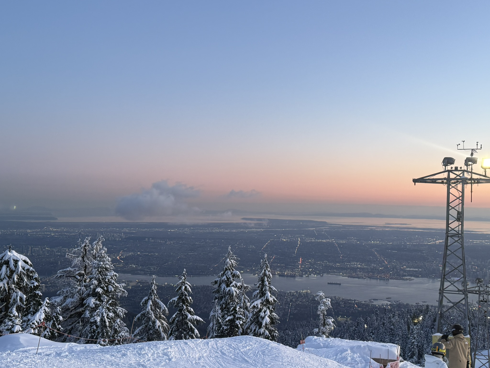
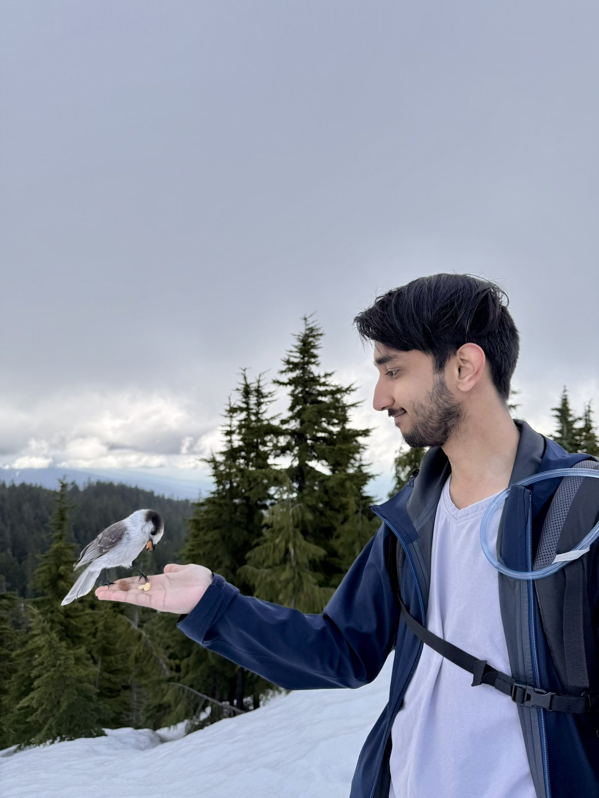
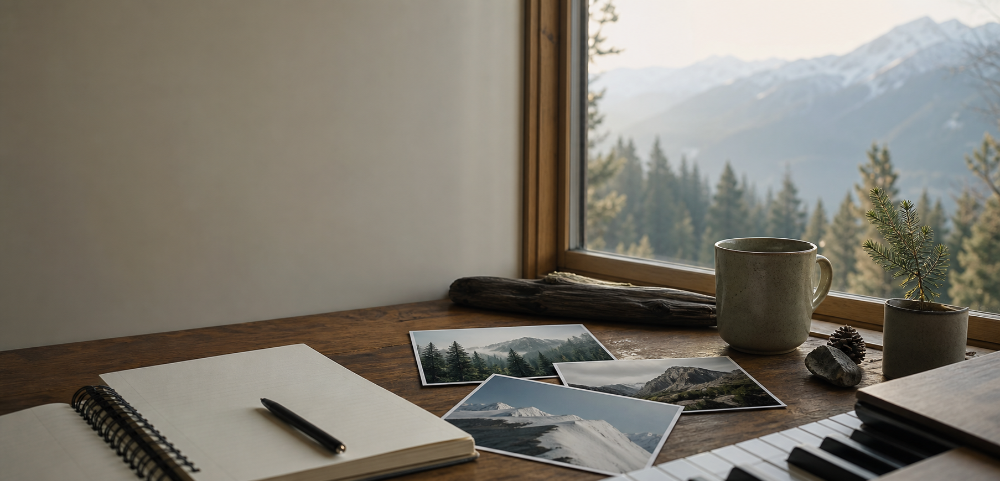
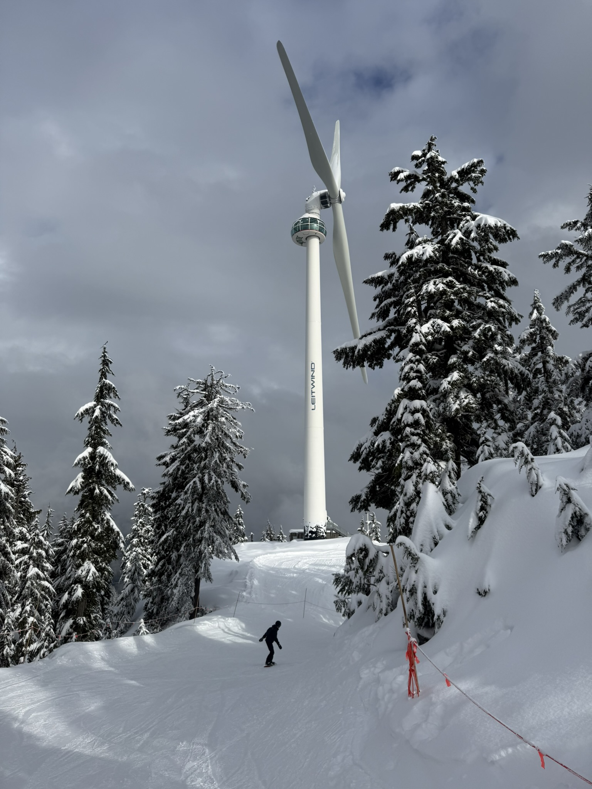

Winter 2026
Snowboard in Whistler
I want to take snowboarding somewhere bigger and see if confidence follows me down the mountain.
Things I am planning
A quiet list of things I want to do next, not as pressure, but as little promises to the future version of me.

Winter 2026
I want to take snowboarding somewhere bigger and see if confidence follows me down the mountain.

Summer
I want a few quiet days on trail, carrying only what I need and learning how steady I can be alone.

Someday
Mostly curiosity, partly humility, and partly completing this webpage in the most cinematic way possible.

Still forming
Some plans need time before they become clear, so this one stays open until it keeps returning.